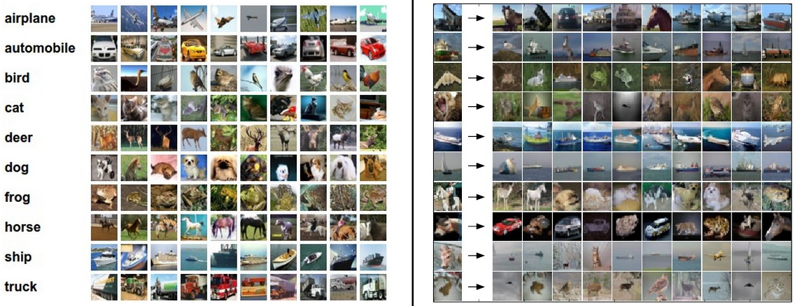

Image Classification: Data-driven Approach, k-Nearest Neighbor, train/val/test splits
Table of Contents
本讲义翻译自 cs231n:image-classification1。主要目标给没有做过计算机视觉的 人，介绍一下图像分类和数据驱动的学习方法。
Image Classification
Motivation
图像分类(Image Classification)主要是对输入图像分到某一个类别的问题。该问题是计 算机视觉的一个核心问题，虽然比较简单，但是有很大应用场景。而且随着学习的深入，我 们可以看到其他的一些问题(目标识别、场景分割)也是基于图像分类来做的。
Example
例如：下图图示1显示了输入一个图像，对该图像分类，分到4个类别{cat,dog,hat,mug}。 如图所示，一个图像在计算机看来就是3维数组。如例子所示，该猫咪图像248像素宽，400 像素高，同时有3个颜色通道，分别为红色、绿色、蓝色（RGB）。因此，一个图像由 248*400*3个数字，总共297600个数字组成。每一个数字的范围为0（黑色）到255（白色）。 图像分类就是根据这些数字进行分类到某个标签，例如 'cat'。

Figure 1: 图像分类说明
Challenges
虽然图像分类任务相对人来说是一个比较简单的，但是对于计算机来说只是看到了一堆数字， 并不是非常简单。如下是计算机视觉在图像分类会遇到的一些挑战：
Viewpoint variation- 同一个对象，采取不同的视角进行拍摄，图像的最后变现具 有很大的变化
Scale varlation- 同一类对象，在现实中也不是完全一样大小的
Deformation- 很对对象可以具有很多形态
Occusion- 对象可以被遮挡，很多时候只会露出局部
Illumination conditions- 光照情况会极大的影响图像数组呈现的数值
Background clutter- 感兴趣的对象有可能和背景色相似，增加辨识难度
Intra-class variation- 即使是同一类对象，内部也会具有一定差异

Figure 2: 图像识别中的一些挑战
一个表现较好的图像分类模型需要能够克服如上的一些影响，保持类之间的分类性能。
- Data-driven approach
思考，如何去构建一个算法来对图像进行分类呢？这个算法并不像排序算法，因为并没有一 个很明确的算法过程可以保证图像正确分类。一大堆if-else语句？
因此，这里常常采取的方法类似教小孩子识别图像一样。获取大量的样本图像，然后开发一 个学习算法去学习这些样本图像。这个方法叫做： data-driven approach 。
图像分类的训练集如下图所示，每个类别里都要包含若干张图片。

Figure 3: train-dataset
- The Image classification pipeline
图像分类可以抽象为输入一个像素数组，代表输入的图像；然后根据像素数组来分配一个或 多个类别。整体的流程如下：
Input- 输入为N个图像，并且每一个图像都有一个类别，分属于k类中的一个。 这些数据叫做训练集
Learning- 构建一个模型根据输入的训练集进行学习如何将像素数组分到不同的类别， 这个过程叫做 training a classifier
Evaluation- 最后，需要对这个训练的分类器进行评估。使用一个测试集，即这个集 合中的数据模型是没有使用来进行训练，根据预测的类别去评估效果。 这里的每个图像的真实类别叫做 ground truth
Nearest Neighbor Classifier
训练的第一个分类器叫做最近近邻分类器(Nearest Neighbor Classifier)。该分类器在 实际场景中基本不会得到应用，而且和卷积神经网络一点关系都没有，但是可以通过这个简 单的分类器先去学习一些图像分类的思想。
Example Image classification dataset: CIFAR-10
CIFAR-102 是一个较为简单的图像分类数据集。由60K 32*32像素的图像组成。总共有10类 的类别标签。下图是CIFAR-10的示例：
 左图：CIFAR-10不同类别下的图像示例；右图：第一列是一些测试图像，其他列是top-10最 近近邻的图像。
将CIFAR-10分为两部分，50K的用来作为训练集，每个列别具有5K的图像。剩下的10K图像作 为测试集。最近近邻分类器会对每一个测试集中的图像计算在训练集中的最近近邻图像，然 后测试图像的类别就标记为在训练集中的最近近邻图像的标签。
如何定义两张图像的距离呢？最简单的做法就是将两张图像逐像素的进行比较，然后对差值 加和即可。例如：两张图像表示为向量 I1,I2 ， L1 distance 如下公式：
\begin{equation} d_{1}(I_{1},I_{2}) = \sum_{p}{\lvert I_{1}^p-I_{2}^P \rvert} \end{equation}
 如图所示：逐像素进行距离计算，然后对这些差值加和，就是 L1 distance
如图所示：逐像素进行距离计算，然后对这些差值加和，就是 L1 distance
那么如何实现最近近邻算法，首先需要准备训练集和测试集。
Xtr, Ytr, Xte, Yte = load_CIFAR10('data/cifar10/') # a magic function we provide # flatten out all images to be one-dimensional Xtr_rows = Xtr.reshape(Xtr.shape[0], 32 * 32 * 3) # Xtr_rows becomes 50000 x 3072 Xte_rows = Xte.reshape(Xte.shape[0], 32 * 32 * 3) # Xte_rows becomes 10000 x 3072
加载 CIFAR-10 数据集，获得4个数组：training data/label和test data/label。 Xtr 为训练集数组，数据纬度为50K*32*32*3，对应的 Ytr 为训练集数据的类别，数据 纬度为50K，并且数值在[0-9]。
接着训练和评估分类器：
nn = NearestNeighbor() # create a Nearest Neighbor classifier class nn.train(Xtr_rows, Ytr) # train the classifier on the training images and labels Yte_predict = nn.predict(Xte_rows) # predict labels on the test images # and now print the classification accuracy, which is the average number # of examples that are correctly predicted (i.e. label matches) print 'accuracy: %f' % ( np.mean(Yte_predict == Yte) )
accuracy 用来评估分类器在测试集上的分类效果。需要注意的是分类器一般都具有两个 API： train(X,y) 接受训练数据进行模型训练； predict(X) 接受新的数据进行分类。
如下是一个简单的最近近邻分类器实现，采取 L1 distance ：
import numpy as np class NearestNeighbor(object): def __init__(self): pass def train(self, X, y): """ X is N x D where each row is an example. Y is 1-dimension of size N """ # the nearest neighbor classifier simply remembers all the training data self.Xtr = X self.ytr = y def predict(self, X): """ X is N x D where each row is an example we wish to predict label for """ num_test = X.shape[0] # lets make sure that the output type matches the input type Ypred = np.zeros(num_test, dtype = self.ytr.dtype) # loop over all test rows for i in xrange(num_test): # find the nearest training image to the i'th test image # using the L1 distance (sum of absolute value differences) distances = np.sum(np.abs(self.Xtr - X[i,:]), axis = 1) min_index = np.argmin(distances) # get the index with smallest distance Ypred[i] = self.ytr[min_index] # predict the label of the nearest example return Ypred
L1 distance 的最近近邻算法在CIFAR-10上的准确性为 38.6% 。
The choice of distance
还有很多中距离度量函数，另外一个常用的距离度量为 L2 distance ，在几何学叫做 euclidean distance.计算公式如下：
\begin{equation} d_{2}(I_{1},I_{2}) = \sqrt{\sum_{p}{(I_{1}^p-I_{2}^p)^2}} \end{equation}使用 numpy 只需要修改一行计算距离的代码即可：
distances = np.sqrt(np.sum(np.square(self.Xtr - X[i,:]), axis = 1))
L2 distance 的最近近邻算法在CIFAR-10上的准确性为 35.4% ，略低于 L1 distance 。
K-Nearest Neighbor Classifier
最近近邻算法由于只考虑了一个最近样本的类别信息，在距离差距差不多的时候，容易形成 错分。所以可以多考虑 k 个最近的样本的类别信息进行分类，能够提高分类准确性，这种方 法叫做 k-Nearest Neighbor Classifier 。当 k=1 的时候就退化成了最近近邻算法。

Figure 4: knn
NN和KNN算法的差别。 二维数据，3个类别（红蓝绿），显示了不同区域所属于的标签区域。